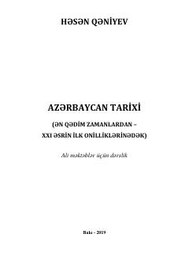

ATQadimgi zamonlardan XXI asrgacha bo'lgan Ozarbayjon tarixiga bag'ishlangan oliy o'quv yurtlari uchun dərslik.
Ushbu dərslik Azərbaycanning ən qədim zamonlardan to XXI asrning ilk o'n yilliklarigacha bo'lgan tarixini yig'cham va real tarzda yoritib beradi. Unda qadimgi, o'rta asrlar, yangi va eng yangi davrlar bilan bir qatorda Mustaqil Ozarbayjon Respublikasining tarixiga ham alohida o'rin ajratilgan. Kitob oliy o'quv yurtlari talabalari va o'qituvchilari uchun mo'ljallangan.